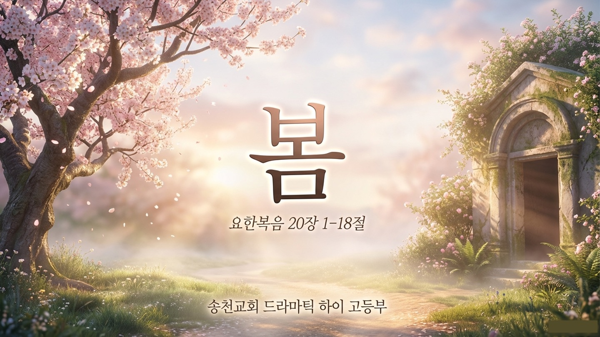
드라마틱 에필로그
요한복음 20:11–18
🎵 사운드를 켜고 감상해주세요
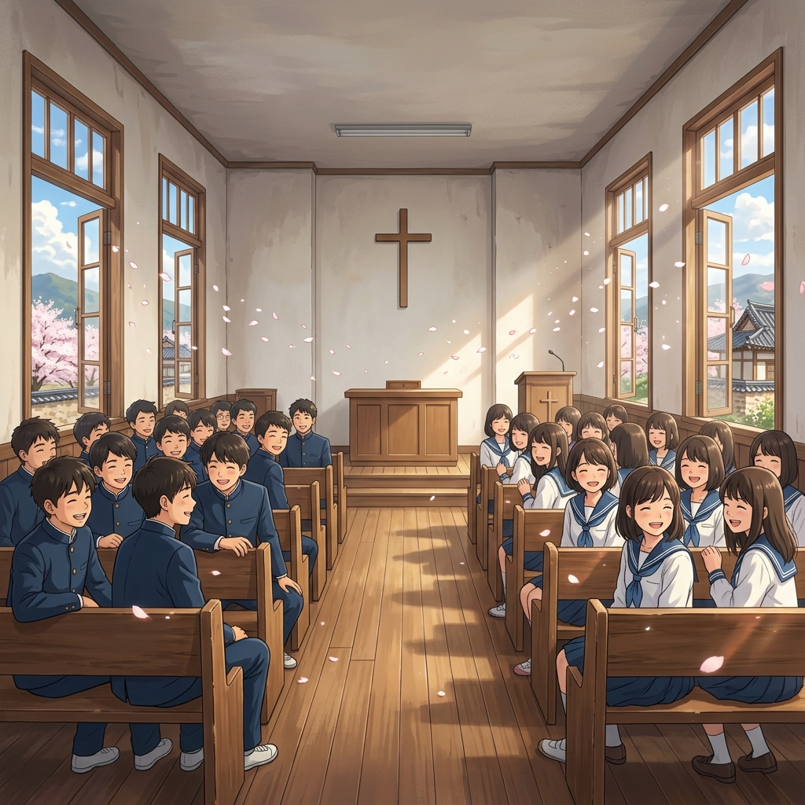
날씨는 눈부신 봄인데,
코앞으로 다가온 중간고사 생각하면
마음은 여전히 쌀쌀한 겨울일지도 몰라요.
일주일을 버텨내느라
진짜 고생 많았습니다. 💪
그리고 이렇게 말해주는 거예요.
"주님의 사랑으로 사랑합니다!"
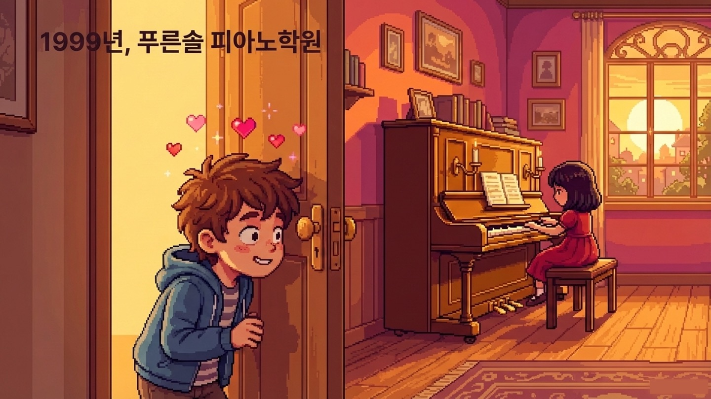
때는 1999년, 의정부 깡촌으로 이사 갔을 때였어요.
밤이면 개구리 울고 비료 냄새 진동하던 동네...
'푸른솔 피아노 학원' 같은 반
동갑내기 친구, '예은이'를 봤습니다.
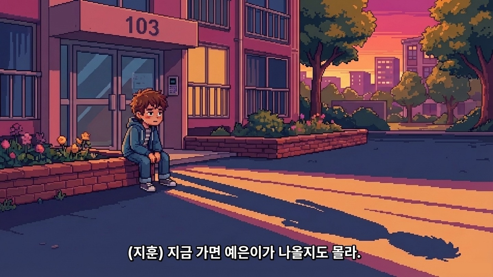
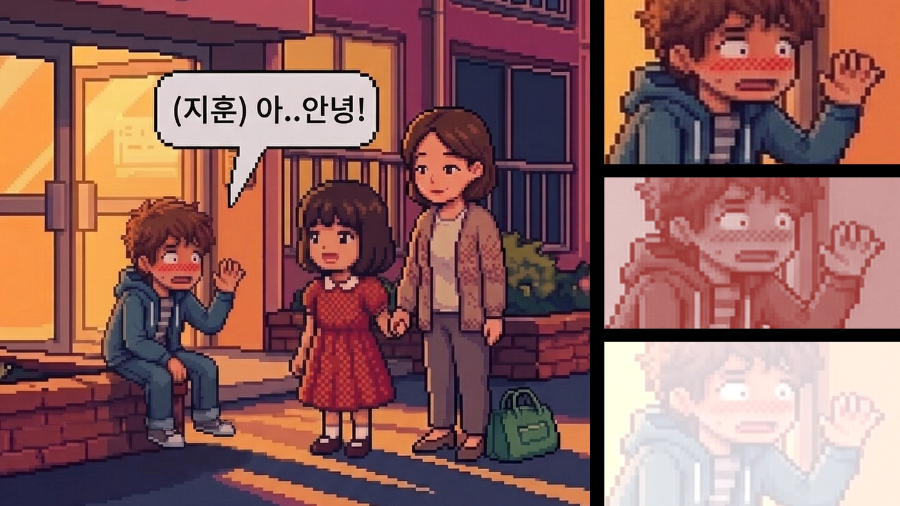
얼굴 한 번 보고 싶어서
예은이네 집 앞 화단에 무작정 앉았어요.
다리에 쥐가 나서 저릿저릿한데도
도무지 일어날 수가 없었죠.
'지금 가면 걔가 나올지도 몰라'
— 이 생각 하나뿐이었어요.
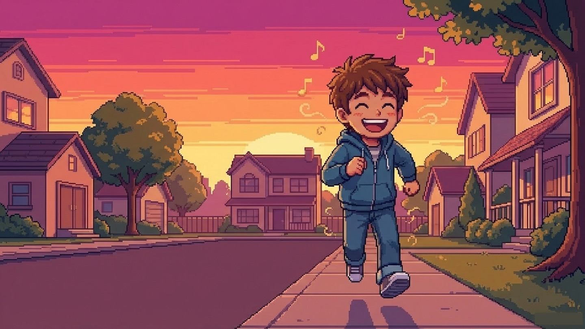
분명 주변엔 소똥 냄새, 비료 냄새가
진동하는데...
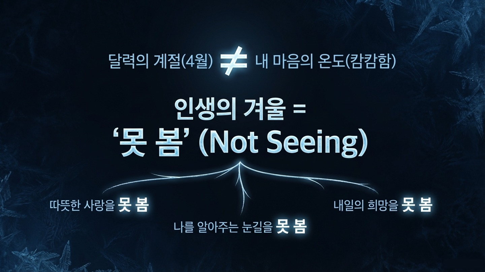
학교에선 다들 나를 '성적'으로만 평가하잖아요.
나를 있는 그대로 봐주는 눈길은 없고,
미래도 보이지 않는 캄캄한 상태.
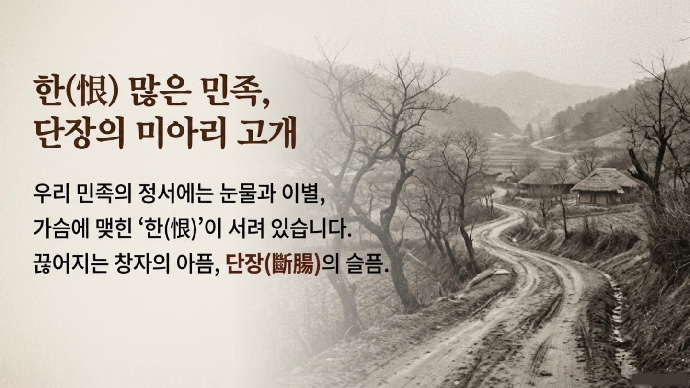
우리가 매주 예배 드리러 오는 미아리고개.
'단장(斷腸)의 미아리고개'—
창자가 끊어지는 아픔이라는 뜻이에요.
70년 전, 가족을 잃고 철사 줄에 묶여
끌려가던 비명이 서린 이 길.
그 아픔처럼 마음의 겨울을 살던
한 여자가 2천 년 전 이 새벽,
무덤가에 주저앉아 울고 있었어요.
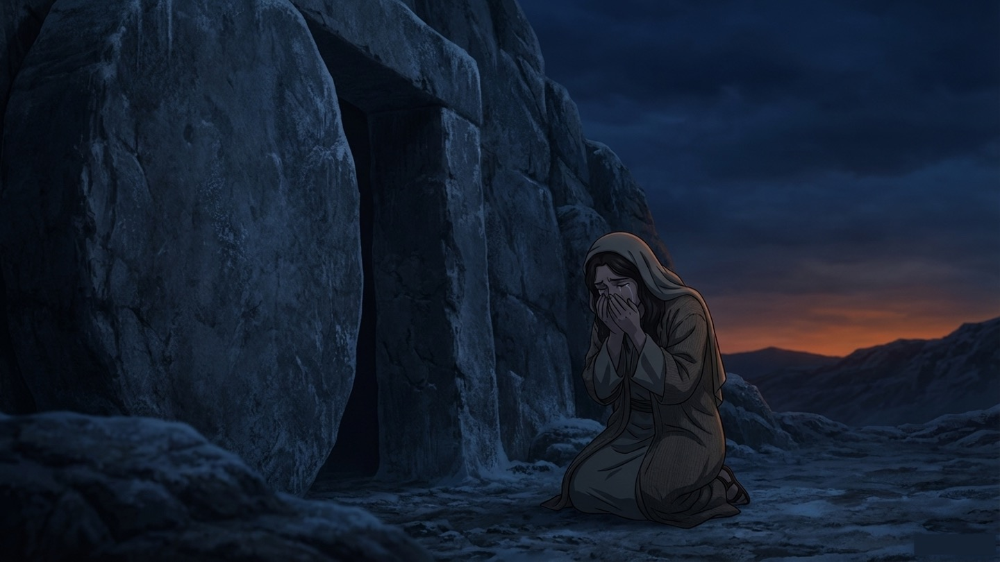
사람들이 재수 없다고 침 뱉고 돌 던질 때,
마리아의 이름을 불러주고
다정하게 눈을 맞춰주신 분이 예수님이었어요.
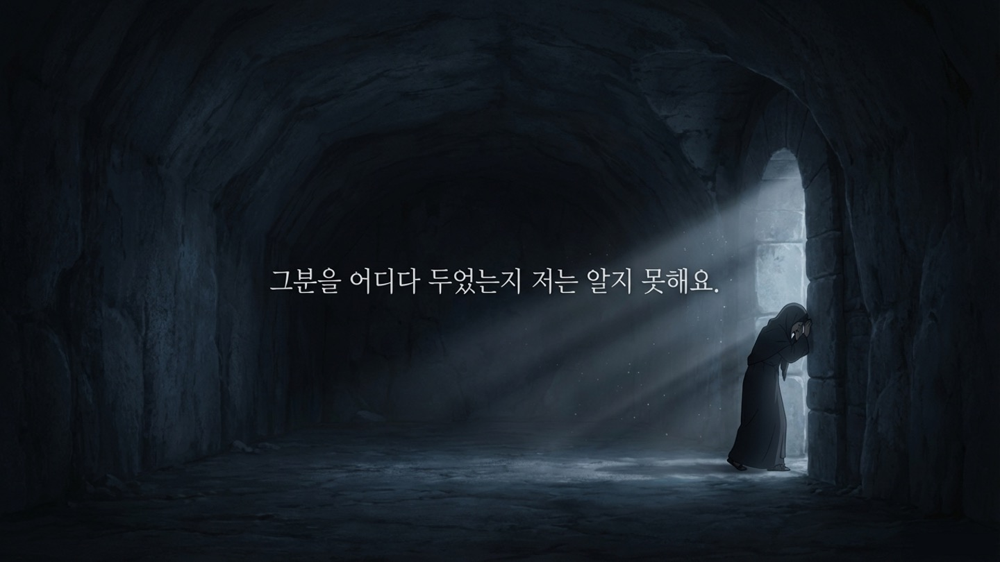
마리아는 시신이라도 보려고
새벽에 무덤으로 달려갔어요.
그런데 무덤 문이 열려 있고
시신마저 사라진 거예요.
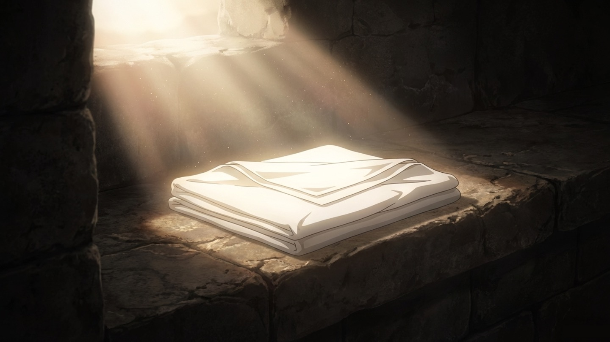
요한복음 20:7
누가 시신을 훔쳐갔다면
수건을 이렇게 각 잡아서 개어놨을까요?
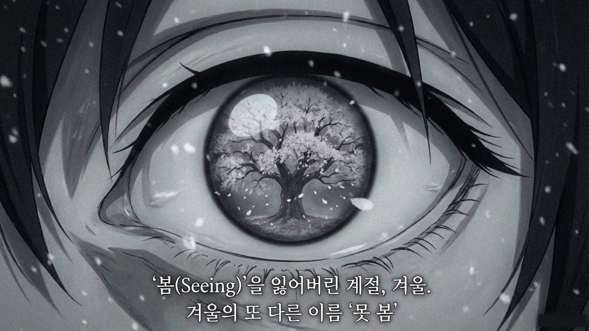
헉헉거리며 간신히 살아나신 게 아니에요.
기분 좋게 꿀잠 자고 일어난 주일 아침처럼,
늘 하던 대로 이부자리를 정리하듯...
주님은 이 여유 속에 계셨는데,
마리아는 여전히 '못봄'의 겨울 속에 갇혀 있었어요.
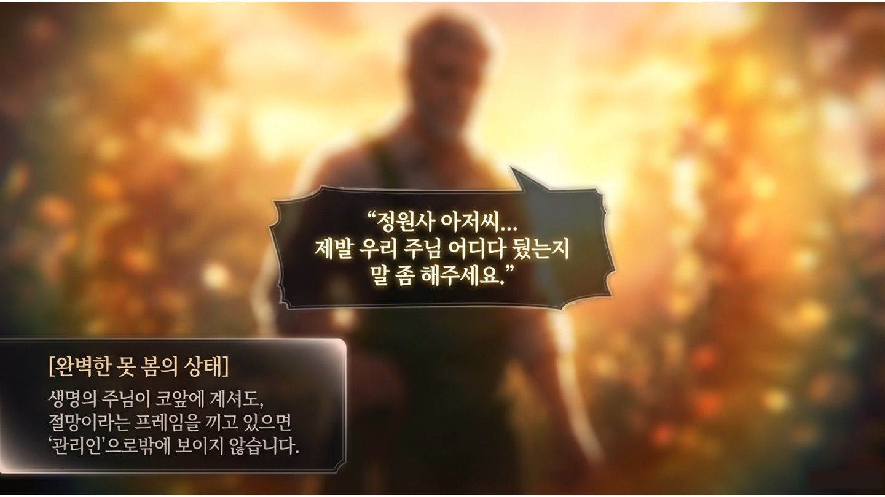
눈물 범벅인 마리아에게
주님이 딱 한마디를 하세요.
마리아야!
7살 지훈이가 예은이의 부름에
세상이 꽃향기로 변했던 것처럼,
마리아의 얼어붙은 시간에도
진짜 봄이 찾아온 거예요.
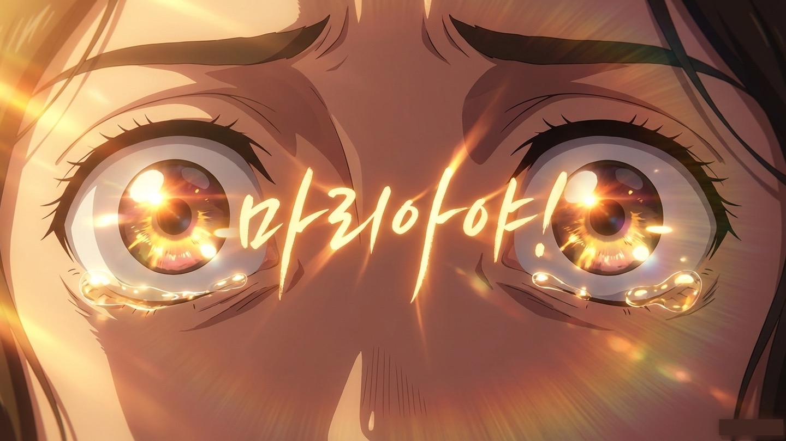
밤에 혼자 누워 자책할 때,
불현듯 마음 한구석에서 이런 생각이 든 적 없나요?
그건 여러분 스스로 하는 위로가 아니에요.
우리 안에 계신 성령님이
여러분 영혼에 대고 속삭여주시는
진짜 주님의 목소리예요.
세상은 무조건 앞만 보고 달리라고 할 거예요.
멈추면 큰일 날 것처럼 겁을 주겠죠.
그때 잠시 멈춰서 뒤를 돌아보세요.
🌸
나를 부르시는
주님의 목소리를
듣겠습니다.
주님은 지금도 내 이름을 부르고 계십니다.
"겨울 같은 이 시간 속에서도, 주님이 우리 아이의 이름을 부르고 계심을 믿게 하옵소서. 공부에 지쳐 눈물이 앞을 가릴 때도, 수건을 단정히 개어놓으신 부활의 주님이 함께 서 계심을 알게 하옵소서. 예수님의 이름으로 기도합니다. 아멘."
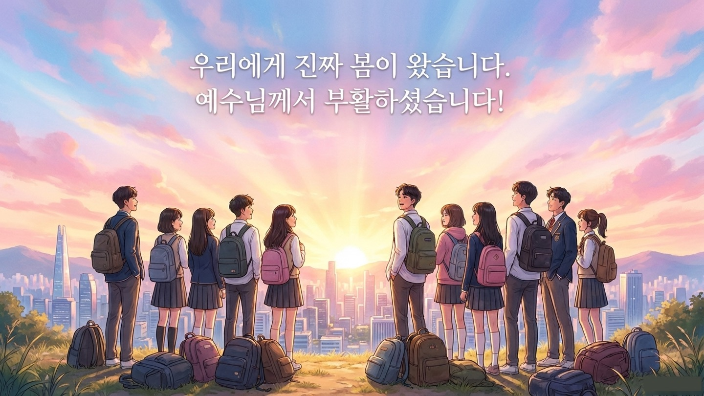
📖 오늘의 말씀 — 요한복음 20:16
"예수께서 마리아야 하시거늘
마리아가 돌이켜 히브리 말로
랍오니 하니
(이는 선생님이라는 말이라)"
이번 한 주,
다정하게 내 이름을 부르시는
그 음성 안에서
진짜 봄날을 살아가세요. 🌸